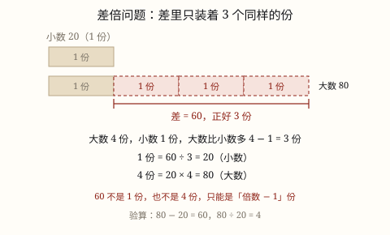
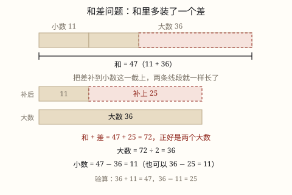

和差、和倍与差倍问题
知道两个数的和，也知道两个数的差，就能把这两个数求出来。道理只有一句：和里多装了一个差，补上它就变成两个大数。
| 所属主题 | 解决问题 |
|---|---|
| 所属模块 | 数与代数 |
| 课标学段 | 第三学段（5~6年级） |
| 前置知识 | 常见数量关系（总价、路程） |
| 核心素养 | 模型意识几何直观推理意识运算能力 |
教材定位
人民教育出版社《2024年版》
对应四上第 4 单元「加法模型和乘法模型」的和差模型。；对应四上第 4 单元「加法模型和乘法模型」的和倍模型。；对应四上第 4 单元「加法模型和乘法模型」的差倍模型。
课标要求
| 数与代数·数量关系 | 在实际情境中，运用数和数的运算解决问题；在解决实际问题的过程中，能结合具体情境，选择合适的单位进行简单估算，体会估算在生活中的作用（例11）。 印刷第 21 页 行为动词：运用 |
|---|---|
| 数与代数·数量关系 | 能解决生活中的简单问题，并能对结果的实际意义作出解释，经历探索简单规律的过程（例14），形成初步的模型意识和应用意识。 印刷第 21 页 行为动词：运用 |
| 数与代数·数量关系 | 能运用常见的数量关系解决实际问题，能合理解释结果的实际意义，逐步形成模型意识和几何直观，提高解决问题的能力。 印刷第 24 页 行为动词：运用 |
说明
两筐苹果一共 58 千克，甲筐比乙筐多 8 千克，甲筐、乙筐各多少千克？这道题只给两个条件：两个数的和、两个数的差，要你反过来求这两个数。这类题就叫和差问题。
先画线段图，不要先想公式。画一条短线段表示乙筐（小数），再画一条长线段表示甲筐（大数），长出来的那一小截就是 8 千克（差），两条线段接起来的总长是 58 千克（和）。
如果给短的那条补上一截 8 千克，两条线段就一样长了，都变成大数那么长。总长也跟着多了 8 千克：58 + 8 = 66。这 66 千克是两个大数，所以大数 66 ÷ 2 = 33 千克。
反过来，把长的那条剪掉 8 千克，两条就都变成小数那么长，总长变成 58 - 8 = 50，这 50 千克是两个小数，小数 50 ÷ 2 = 25 千克。
把这两步写成式子：大数 = (和 + 差) ÷ 2，小数 = (和 − 差) ÷ 2。求出其中一个，另一个也可以用减法得到：58 - 33 = 25。
最后一定要回代：33 + 25 = 58（和对了），33 - 25 = 8（差也对了）。两个条件都回去了，答案才靠得住。
（和倍问题）
学校合唱队分两个声部，一共 96 人，高声部人数是低声部的 3 倍。低声部有多少人？这道题给了和（96 人），又给了倍数关系（3 倍），要求这两个数，这类题叫和倍问题。
先画线段图：把低声部看成 1 份，画一小段；高声部是它的 3 倍，就画一样长的 3 段接在后面。整条线段一共 1 + 3 = 4 段，这 4 段合起来是 96 人。
既然 4 段是 96 人，1 段就是 96 ÷ 4 = 24 人，这就是低声部。高声部是 3 段：24 × 3 = 72 人。
写成式子：小数 = 和 ÷ (倍数 + 1)，大数 = 小数 × 倍数，也可以 大数 = 和 − 小数。
式子里那个「+1」最容易记错。它不是凭空加的 1，而是小数自己占的那一份：和里有小数的 1 份，还有大数的 3 份，一共 4 份。
最后回代：24 + 72 = 96（和对了），72 ÷ 24 = 3（倍数也对了）。两个条件都回去，答案才算站得住。
（差倍问题）
学校图书角的故事书比科技书多 60 本，故事书的本数是科技书的 4 倍。科技书有多少本？这道题给的是差（多 60 本）和倍数关系（4 倍），要求这两个数，这类题叫差倍问题。
画线段图：科技书是 1 份，画一小段；故事书是它的 4 倍，就在下面画左端对齐的 4 段同样长的线段。两条线段一比，故事书右边多出来 3 段。
多出来的这 3 段，正是题目说的「多 60 本」。所以 3 份 = 60 本，1 份 = 60 ÷ 3 = 20 本，这就是科技书。故事书 = 20 × 4 = 80 本。
写成式子：小数 = 差 ÷ (倍数 − 1)，大数 = 小数 × 倍数，也可以 大数 = 小数 + 差。
这里的「倍数 − 1」和和倍问题的「倍数 + 1」正好相反，原因很直白：和里装着全部份数（1 份加几份），差里只装着多出来的那几份（几份减 1 份）。
回代检查：80 - 20 = 60（差对了），80 ÷ 20 = 4（倍数也对了）。
使用场景
分东西：两个班分 90 本课外书，甲班比乙班多 10 本，各分多少本——这是最标准的和差。
年龄：爸爸和儿子的年龄和、年龄差，往往一起给出；知道和与差就能算出各自几岁。
称重和装箱：两筐水果共重多少、甲筐比乙筐重多少，算各筐重量。
比赛和考核：两个队总分共多少、甲队比乙队高多少分，算各自的分数。
两个车间的产量：一天共生产多少件，一车间比二车间多生产多少件，算各自产量。
（和倍问题）
分东西：两个班共分到 120 本书，甲班是乙班的 2 倍，各分多少本。
人数分配：两个小组一共多少人，一组人数是另一组的几倍，算各组人数。
库存和进货：两个仓库共存多少箱，甲仓是乙仓的几倍，算各仓存多少。
植树和栽花：校园里两种树一共多少棵，一种的棵数是另一种的几倍。
钱和零花：两个人存的零花钱一共多少，一个人的是另一个人的几倍。
（差倍问题）
图书和库存：两种书相差多少本、一种是一种的几倍，算各自多少本。
存钱：两个人的零花钱相差多少元，多的那个人是少的人的几倍。
长度和重量：两卷绳相差多少米，长的是短的几倍；两袋米相差多少千克。
成绩和得分：两个队得分相差多少，一队得分是另一队的几倍。
年龄：妈妈比女儿大多少岁，妈妈年龄是女儿的几倍——年龄差永远不变，最适合出这类题。
注意点
认清哪个是和、哪个是差。「一共」「总共」「合起来」后面跟的是和；「多多少」「少多少」「相差」后面跟的是差。两个数弄反，答案一定错。
加差得大数，减差得小数。这一步最容易对调：(和 + 差) ÷ 2 出来的那个数比平均数大，它是大数，不是小数。
注意藏起来的差。像「从甲筐拿 4 千克放进乙筐，两筐就一样重」，差不是 4 而是 8——甲少了 4、乙多了 4，差距才被拉平。
公式只管两个数。碰到三个人、三个班，先想办法化成两个数，或者换个方法（比如找中间那个量），不能直接套。
答案要成对写。题目问「各是多少」，只答一个数不算答完；答句里把两个数都写清楚，单位各归各位。
（和倍问题）
先确认「和」是哪两个数的和。如果题里一共有三个量，先看清哪两个在比倍数，别把第三个量也加进和里。
看清「是几倍」还是「多几倍」。「甲是乙的 3 倍」→ 甲占 3 份；「甲比乙多 3 倍」→ 甲是乙的 4 倍，占 4 份。这两句话差一整份。
除完得到的是 1 份，也就是被当作标准的那一个量（小数），不是大数。要求大数还得再乘倍数。
除数是「倍数 + 1」。加号千万别写成减号，那是差倍问题的份数，用的是差不是和。
结果要回代两次：加一加看和对不对，除一除看倍数对不对。只验一个条件，错了也发现不了。
（差倍问题）
先分清给的是和还是差。「一共」「总共」是和，「多多少」「少多少」「相差」是差。差倍问题只能用差，把和代进差倍的式子必错。
除数是「倍数 − 1」，不是「倍数 + 1」。多出来的份数永远比倍数少 1，因为小数自己那一份不在「多出来」的范围里。
差可能是藏起来的。像「从甲筐拿 5 千克给乙筐后一样重」，差是 5 × 2 = 10；像「两人各存进 20 元」，差不变。看到这类话，先把差找出来再动笔。
除完得到的是 1 份（小数），不是大数。要求大数还要乘倍数，或者加差。
答句要成对，并且把「谁是谁的几倍」再对一遍，别把两个数写反。

图 1：把和切成一模一样的小份，一共 1 + 3 = 4 份，除 4 就得到一份

图 1：大数比小数多出来的 3 份，就是题目给的差；除 3 才得到一份
为什么是这样

图 1：把差补到小数那一截上，两条线段就一样长，总长变成 72，正好是两个大数
算理推导
先把「差」翻译成一句话：大数 = 小数 + 差。差的意思就是大数比小数多出来的那一截，看图 1 上半部右边那个虚线小段。
那么 和 = 小数 + 大数 = 小数 + (小数 + 差)，也就是两个小数，外加一个差。看图 1 上半部：整条 47 里面，装着小数的 11、大数里与小数量齐的 11，以及多出来的 25。
既然和里多装了一个差，那就把这个差再加一次：和 + 差 = 两个小数 + 差 + 差，两个「差」正好各自补到两个「小数」的缺口上，凑成两个大数。看图 1 下半部，补完之后两行一样长。
所以 和 + 差 = 2 × 大数。两边各除以 2，得 大数 = (和 + 差) ÷ 2，即 72 ÷ 2 = 36。这里的除法是「平均分成两份」，因为补完之后是两段一样长的东西。
同理，和里减去一个差，剩下的就是两个小数：和 − 差 = 2 × 小数，所以 小数 = (和 − 差) ÷ 2。
这两个式子是同一件事的两个方向：一个补、一个剪。补出来的是长的，剪出来的是短的。记住动作，就不用背符号：加差 → 大数，减差 → 小数。
（和倍问题）
「大数是小数的 3 倍」这句话的意思，可以换个说法：拿小数去量大数，正好量 3 次，一次不多一次不少。倍数关系天生就是「用一份去量另一份」。
既然能量，那就把整条线段都换成「小数那么长的小段」来数：小数占 1 段，大数占 3 段。看图 1，横条被切成了 4 个一模一样的方块。
这 4 段拼起来正好是 大数 + 小数，也就是题目给的 96。所以和不是一个糊里糊涂的总数，它是 4 个同样大的小段摞在一起。这一步是全部算理的关键。
既然 4 段 = 96，那 1 段 = 96 ÷ 4 = 24。这里的除法是「平均分成 4 份」，不是「96 里包含几个 4」——因为 4 段本来就是 96 切出来的，不是拿来量 96 的。
1 段求出来了，小数就是 1 段 24；大数是 3 段，24 × 3 = 72。到这里，两个数都落地了。
把 4 换成一般的数：如果倍数记作 k，份数就是 1 + k。所以 小数 = 和 ÷ (k + 1)。这个 +1 是从「小数自己也占一份」来的，不是规定。倍数变了，份数跟着变，但「和 ÷ 份数 = 一份」永远不变。
（差倍问题）
「大数是小数的 4 倍」还是那句话：拿小数去量大数，正好量 4 次。所以大数可以切成 4 段，每段和小数一样长。
把两条线段左端对齐画（看图 1）：小数占 1 段，大数占 4 段。大数比小数长出来的那一部分，正好是后面 3 段，也就是 4 - 1 = 3 段。
题目给的「差 60」说的是什么？就是这两条线段长度之差，也就是那长出来的一截。所以 60 不是 4 段的长，也不是 1 段的长，它只是 3 段的长。这一步想通了，式子自然就出来了。
3 段是 60，1 段就是 60 ÷ 3 = 20。这里的除法是「60 里包含几个 20」——把 60 按段分回去，每段 20。
1 段就是小数，所以小数 20；大数 4 段，20 × 4 = 80。检查：80 - 20 = 60，多出来的确实是 60。
把 4 换成 k：多出来的份数是 k - 1，所以 小数 = 差 ÷ (k − 1)。减 1 减掉的是小数自己那一份，它没有参与「多出来」。这也解释了为什么和倍是加 1、差倍是减 1。
动手实验
拿 20 颗棋子分成两堆，让一堆比另一堆多 4 颗。先真的分一分，得到 8 颗和 12 颗。然后按两种做法各走一遍：第一种，把多出来的 4 颗先拿到一边，剩下的 16 颗两堆一样多，每堆 8 颗，这是 (20-4)÷ 2；第二种，先借 4 颗补到少的那堆上，两堆都变成 12 颗，一共用掉 24 颗，这是 (20+4)÷ 2。换几组数（和 30 差 6、和 25 差 5）重做，你会发现每次都是「先弄成一样多，再平均分成两份」，加差和减差只是弄成一样多的两种手段。 （和倍问题） 用棋子摆一摆：先摆 1 堆 6 颗当小数，再摆 3 堆同样多的当大数，一共 4 堆 24 颗。数一数堆数（4 堆），24 ÷ 4 = 6，正好回到一开始那 6 颗。然后把大数改成 5 堆，重新摆，总数变成 36 颗、堆数变成 6 堆，36 ÷ 6 还是 6。你会发现每一堆的颗数从头到尾没变，变的是堆数，而堆数永远等于「倍数 + 1」。再试着把倍数改成 1 倍（两堆一样多），份数就是 2，和除以 2 正好是两个相等数中的一个。 （差倍问题） 摆两排棋子：第一排 5 颗，第二排 20 颗（正好 4 倍）。数一数第二排比第一排多 15 颗，再看看这 15 颗能分成几组「5 颗」——正好 3 组。再把第一排改成 6 颗、第二排 24 颗，差变成 18 颗，18 ÷ 3 = 6，又回到 1 份。最后把倍数改成 5 倍（第一排 5 颗、第二排 25 颗），差 20 颗，20 ÷ 4 = 5，除数变成了 4。你会发现：每次除的都是「倍数 − 1」，倍数变，除数跟着变，但被除的永远是差。
按场景的例题
例 1（场景：家庭与年龄） 父子年龄
爸爸和儿子的年龄和是 47 岁，爸爸比儿子大 25 岁。两人各多少岁？
解：大数（爸爸）= (47 + 25) ÷ 2 = 72 ÷ 2 = 36（岁）；小数（儿子）= 47 - 36 = 11（岁）。也可以用 (47 - 25) ÷ 2 = 11。
答：爸爸 36 岁，儿子 11 岁。
例 2（场景：校园生活） 合唱队分声部
学校合唱队两个声部一共 84 人，高声部比低声部多 12 人。两个声部各多少人？
解：高声部 = (84 + 12) ÷ 2 = 96 ÷ 2 = 48（人）；低声部 = 84 - 48 = 36（人）。回代：48 + 36 = 84，48 - 36 = 12。
答：高声部 48 人，低声部 36 人。
例 3（场景：物流运输） 两个分拣点的一天
快递公司两个分拣点一天共分拣 1860 件包裹，甲点比乙点多分拣 240 件。两点各分拣多少件？
解：甲点 = (1860 + 240) ÷ 2 = 2100 ÷ 2 = 1050（件）；乙点 = 1860 - 1050 = 810（件）。回代：1050 - 810 = 240。
答：甲点 1050 件，乙点 810 件。
例 4（场景：农业生产） 两筐苹果重新分配
两筐苹果共重 58 千克。从甲筐取出 4 千克放进乙筐后，两筐正好一样重。原来两筐各重多少千克？
解：两筐拉平的过程中，甲少了 4 千克、乙多了 4 千克，所以原来的差是 4 × 2 = 8（千克），不是 4。甲筐 = (58 + 8) ÷ 2 = 33（千克），乙筐 = 58 - 33 = 25（千克）。检验：甲取走 4 千克后 29 千克，乙得到 4 千克后也 29 千克，一样重。
答：甲筐原来 33 千克，乙筐原来 25 千克。
例 5（场景：校园生活） 合唱队分声部
学校合唱队两个声部一共 96 人，高声部人数是低声部的 3 倍。两个声部各多少人？
解：把低声部看作 1 份，高声部是 3 份，一共 1 + 3 = 4 份。低声部 = 96 ÷ 4 = 24（人），高声部 = 24 × 3 = 72（人）。回代：24 + 72 = 96，72 ÷ 24 = 3。
答：低声部 24 人，高声部 72 人。
例 6（场景：购物消费） 团购拼单买水果
班里团购两箱水果一共花了 144 元，大箱的价钱是小箱的 5 倍。两箱各多少元？
解：小箱 1 份，大箱 5 份，共 1 + 5 = 6 份。小箱 = 144 ÷ 6 = 24（元），大箱 = 24 × 5 = 120（元）。回代：24 + 120 = 144，120 ÷ 24 = 5。
答：小箱 24 元，大箱 120 元。
例 7（场景：绿化照明） 校园里两种树
校园里杨树和柳树一共 128 棵，杨树的棵数是柳树的 3 倍。两种树各多少棵？
解：柳树 1 份，杨树 3 份，共 4 份。柳树 = 128 ÷ 4 = 32（棵），杨树 = 32 × 3 = 96（棵）。回代：32 + 96 = 128，96 ÷ 32 = 3。
答：柳树 32 棵，杨树 96 棵。
例 8（场景：农业生产） 两个大棚的收成
两个蔬菜大棚一共收了 960 千克黄瓜，甲棚的产量是乙棚的 7 倍。两棚各收多少千克？
解：乙棚 1 份，甲棚 7 份，共 1 + 7 = 8 份。乙棚 = 960 ÷ 8 = 120（千克），甲棚 = 120 × 7 = 840（千克）。回代：120 + 840 = 960，840 ÷ 120 = 7。
答：乙棚 120 千克，甲棚 840 千克。
例 9（场景：校园生活） 班级图书角
图书角的故事书比科技书多 60 本，故事书的本数是科技书的 4 倍。两种书各多少本？
解：科技书 1 份，故事书 4 份，多出 4 - 1 = 3 份，正好 60 本。科技书 = 60 ÷ 3 = 20（本），故事书 = 20 × 4 = 80（本）。回代：80 - 20 = 60，80 ÷ 20 = 4。
答：科技书 20 本，故事书 80 本。
例 10（场景：金融理财） 两个人的储蓄罐
小明储蓄罐里的钱比小红多 45 元，小明的钱数是小红的 4 倍。两人各存了多少元？
解：小红 1 份，小明 4 份，多 3 份 = 45 元。小红 = 45 ÷ 3 = 15（元），小明 = 15 × 4 = 60（元）。回代：60 - 15 = 45，60 ÷ 15 = 4。
答：小红 15 元，小明 60 元。
例 11（场景：计量与估算） 两卷包装绳
两卷包装绳，长的那卷比短的那卷长 12 米，长绳的长度是短绳的 3 倍。两卷各长多少米？
解：短绳 1 份，长绳 3 份，多 3 - 1 = 2 份 = 12 米。短绳 = 12 ÷ 2 = 6（米），长绳 = 6 × 3 = 18（米）。回代：18 - 6 = 12，18 ÷ 6 = 3。
答：短绳 6 米，长绳 18 米。
例 12（场景：家庭与年龄） 母女年龄
妈妈比女儿大 28 岁，妈妈的年龄正好是女儿的 5 倍。女儿和妈妈各多少岁？
解：女儿 1 份，妈妈 5 份，多 5 - 1 = 4 份 = 28 岁。女儿 = 28 ÷ 4 = 7（岁），妈妈 = 7 × 5 = 35（岁）。回代：35 - 7 = 28，35 ÷ 7 = 5。
答：女儿 7 岁，妈妈 35 岁。
常用推论
大数 = (和 + 差) ÷ 2，小数 = (和 − 差) ÷ 2。两式相加正好回到和，两式相减正好回到差，这是最快的验算方法。
已知一个数以后，另一个数有两条路：大数 = 和 − 小数 = 小数 + 差；小数 = 和 − 大数 = 大数 − 差。四条路都通向同一个答案。
大数 = 和 ÷ 2 + 差 ÷ 2，小数 = 和 ÷ 2 − 差 ÷ 2。先把和平均分成两份得到「中间数」，再各让一半的差，这正是「移多补少」的做法。
当差是 0 时，两个数一样大，两个式子都退化成 和 ÷ 2，正好是两个相等时的结果。公式经得起这个极端情形。
已知两数的和与差，这两个数就被完全确定了：不可能有第二组答案。因为补上和剪掉的结果都是唯一的。
小数 = 和 ÷ (倍数 + 1)，大数 = 小数 × 倍数。求出小数后，大数还可以用 和 − 小数 得到，两条路互相核对。
总份数 = 倍数 + 1。倍数越大，总份数越多，每一份就越小——同样多的和，分成更多份，一份自然更少。
大数 = 和 ÷ (倍数 + 1) × 倍数，也就是 和 × 倍数 ÷ (倍数 + 1)。一次算完，适合倍数不大的题。
当倍数是 1 时，两数相等，份数是 2，和 ÷ 2 就是每个数。公式在这个极端情形下依然成立。
反过来：倍数 = 大数 ÷ 小数，和 = 小数 × (倍数 + 1)。知道份数和一份，也能算出和来。
小数 = 差 ÷ (倍数 − 1)，大数 = 小数 × 倍数。求出小数后，大数还可以用 小数 + 差 得到，两条路互相核对。
多出来的份数 = 倍数 − 1。倍数越大，多出来的份数越多，同样的差平摊到每一份上就越小。
大数 = 差 + 小数；差 = 大数 − 小数；倍数 = 大数 ÷ 小数。三个量知二求一，与和倍问题的结构完全一样，只是「和」换成了「差」。
两个量同时加上或减去同一个数，差不变。这是年龄问题的底子：不管过几年，妈妈和女儿的年龄差始终是 28 岁。
同一个倍数 k 下，和是 k + 1 份，差是 k - 1 份，两者相差 2 份。所以和倍用加 1、差倍用减 1，用错了份数就对不上。
易错点
错甲、乙两班共 90 人，甲班比乙班多 10 人。求乙班人数，算成 (90 + 10) ÷ 2 = 50（人）。
为什么错加差是把小数补成大数，算出来的 50 人是大数（甲班），不是乙班。要求乙班，得把差剪掉。
正确乙班 = (90 - 10) ÷ 2 = 40（人），甲班 = 50 人。回代：50 + 40 = 90，50 - 40 = 10。
错两筐梨共 40 千克，从甲筐拿 5 千克给乙筐后两筐一样重。直接把差当成 5 千克，算甲筐 (40 + 5) ÷ 2 = 22.5（千克）。
为什么错甲筐少了 5 千克、乙筐多了 5 千克，两筐才拉平，中间一共追回了 10 千克的距离，所以原来的差是 5 × 2 = 10 千克。差看小了，答案就偏了。
正确差 = 5 × 2 = 10（千克），甲筐 = (40 + 10) ÷ 2 = 25（千克），乙筐 15 千克。检验：甲给 5 千克后 20 千克，乙得 5 千克后也 20 千克。
错甲、乙、丙三人共存款 60 元，甲比乙多 4 元，乙比丙多 4 元。求甲，直接算 (60 + 4) ÷ 2 = 32（元）。
为什么错和差公式只管两个数，这里的 60 是三个人的和，4 也不是甲与「其余两人之和」的差。生搬公式，等于把三个数硬当成两个数。
正确先看关系：甲 = 乙 + 4，丙 = 乙 − 4，三人的钱围着乙上下各差 4，合起来正好是 3 个乙。乙 = 60 ÷ 3 = 20（元），甲 24 元，丙 16 元。
错两个数的和是 96，大数是小数的 3 倍。求小数，算成 96 ÷ (3 - 1) = 48。
为什么错减 1 得到的是「大数比小数多出来的 2 份」，那是差倍问题的份数。和里装的是小数的 1 份加大数的 3 份，一共 4 份，不是 2 份。用减 1 去分和，等于把和当成了差，48 既不是 24 也不是 72。
正确96 ÷ (3 + 1) = 24（小数），24 × 3 = 72（大数）。回代：24 + 72 = 96，72 ÷ 24 = 3。
错甲比乙多 3 倍，甲乙一共 100 元。求乙，算成 100 ÷ (3 + 1) = 25（元）。
为什么错「甲比乙多 3 倍」是说甲 = 乙 + 3 个乙 = 4 个乙，甲占 4 份；而「甲是乙的 3 倍」才是甲占 3 份。这两句话差整整一份，份数应该是 1 + 4 = 5。
正确先把「多 3 倍」翻成「是 4 倍」：100 ÷ (4 + 1) = 20（元）是乙，甲 = 20 × 4 = 80（元）。回代：20 + 80 = 100。
错算出 24 就答「高声部 24 人，低声部 72 人」。
为什么错24 是 1 份，对应的是被当作标准的那一个量。「是……的 3 倍」这句话里，跟在「是」后面、被拿来当标准的才是 1 份，这道题里是低声部。1 份的身份认错，两个答案就整体对调。
正确低声部 24 人（1 份），高声部 72 人（3 份）。检查办法：倍数句子里被「的」字跟着的那个量，就是 1 份。
错甲、乙两数相差 60，甲是乙的 4 倍，两数之和是 100。求乙，算成 100 ÷ (4 - 1)。
为什么错差倍公式的被除数必须是差。100 是和，和对应的份数是「倍数 + 1」份；把它塞进差倍的式子，等于拿全部份数的总量去除以「多出来的份数」，除出来的数两头都不靠。
正确看清楚要求什么：用差算 —— 60 ÷ (4 - 1) = 20（乙），甲 = 80。用和核对 —— 100 ÷ (4 + 1) = 20，一样。和配加 1，差配减 1，不能交叉。
错长绳比短绳长 12 米，长绳是短绳的 3 倍。求短绳，算成 12 ÷ (3 + 1) = 3（米）。
为什么错加 1 得到 4 份，那是「和」的份数。差只对应多出来的部分，份数是 3 - 1 = 2。用 4 去除 12，除出来的 3 米既不是短绳 6 米，也不是长绳 18 米。
正确12 ÷ (3 - 1) = 6（米）是短绳，长绳 = 6 × 3 = 18（米）。回代：18 - 6 = 12。
错两筐梨，从甲筐拿 5 千克放进乙筐后两筐一样重。题目还说甲筐是乙筐的 3 倍，学生直接把差当成 5 千克，算 5 ÷ (3 - 1) = 2.5（千克）。
为什么错甲筐少了 5 千克、乙筐多了 5 千克，两筐才拉平，中间一共追回了 10 千克，所以原来的差是 5 × 2 = 10 千克。差取错，1 份就跟着错。
正确差 = 5 × 2 = 10（千克）。乙筐 = 10 ÷ (3 - 1) = 5（千克），甲筐 = 15 千克。检验：甲给 5 千克后 10 千克，乙得 5 千克后也 10 千克；15 ÷ 5 = 3。
直观理解
和差问题的全部动作是一句话：把不相等变成相等。两个数不一般大，没法直接平分；那就先想办法让它们一样大——补上差，两个都变成大数；剪掉差，两个都变成小数。一旦一样大了，总和除以 2 就完事。这个念头还能一路用到别处：和倍问题是把和切成几份整份，差倍问题是把差切成几份整份，三种题的做法不同，但都在干同一件事——先造出「一样大」的东西，再分。所以看到这类题，先别找公式，先问：这两样东西差在哪儿？怎么才能把它们弄成一样？ （和倍问题） 和倍问题的动作是把和切成整份。两个数一大一小不好分，但一旦知道「大的是小的 3 倍」，整条线段就能切成一模一样的 4 块，每块都一样大，除法才有意义。这个念头和邻家两道题是一套的：和差是「补上差让两个数一样大」，和倍是「把和切成一样大的份」，差倍是「把差切成一样大的份」——三种题都在做同一件事，先制造出「一样大」的东西，再平均分。所以别急着背「和 ÷ (倍 + 1)」，先问自己：这道题里，什么东西是一样大的？一共有几份？ （差倍问题） 差倍问题的动作是把差切成整份。两条线段左端对齐一比，多出来的那一截不是一整条，而是几小段拼起来的——所以要先数清「多出来几份」，再拿差去除。这和和倍问题是一对双胞胎：和倍分的是「全部」，份数是「1 + 倍数」；差倍分的是「多出来的部分」，份数是「倍数 − 1」。再加上和差问题的「补差凑成两个大数」，三道题合成一句话：先把不相等变成一样大，再平均分。区别只在于——拿什么去变，变成什么。
和加差，除以二，出来就是大数；和减差，除以二，小数跟着走。加差减差别弄反，回代一遍最稳当。 （和倍问题） 和倍先数几份整，一倍几倍加起来；和除以份数得一份，一份乘倍数得大数。加一不是减一，认准小数那一份。 （差倍问题） 差倍先看多几份，倍数减一才是份；差除以份得一份，一份乘倍数得大数。差配减一和配加，两套份数别交叉。